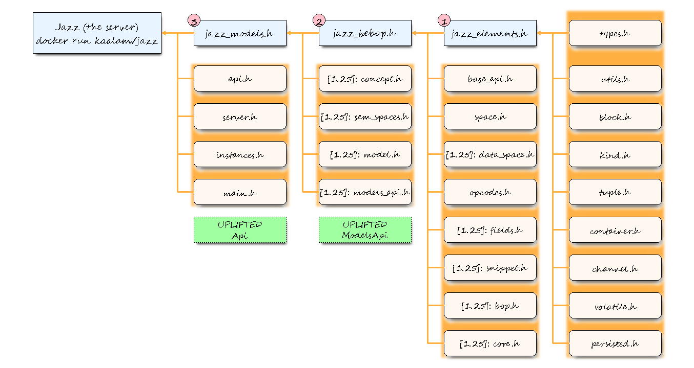

Some clues about what is complete, under development and to be done.
What is complete
This page is a snapshot of the current state of development in terms of Jazz modules. It is updated after the completion (meaning
implementation, documentation and testing) of modules and the percentages of executions are rough estimates, except for complete. The
details of development are updated in the developer’s reference
Jazz modules
Group
Module
Description
Complete
elements
jazz_datablocks
Block types and fundamental definitions (C++ interface)
100%
elements
jazz_utils
Many utilities to support configuration, logging, etc.
100%
elements
jazz_containers
All the fundamental (non persisted) keepers.
100%
main
jazz_instances
Instantiation of the classes for the server and the clients.
100%
main
jazz_main
Http server implementation.
100%
What is still refactoring from Jazz 0.1.x
These modules include code that supports most or all the necessary functionality, but still requires refactoring to the new structures.
Group
Module
Description
Complete
elements
jazz_persistence
The fundamental persisted keepers.
80%
main
jazz_restapi
The implementation of the http responses at server level.
60%
What is under development
Group
Module
Description
Complete
elements
jazz_classes
An interface simplifying the keeprs for the high level APIs.
60%
elements
jazz_httpclient
Petitions across a Jazz cluster (Jazz calling Jazz).
40%
elements
jazz_stdcore
Arithmetic and logic functions on tensors.
20%
functional
jazz_api
The common part of all (high level) APIs.
60%
What is to be done
Group
Module
Description
Complete
functional
jazz_cluster
Classes related with Jazz clusters.
5%
functional
jazz_filesystem
A class implementing distributed collections of files.
5%
functional
jazz_column
Distributed (replicated) data columns of tensors.
5%
functional
jazz_dataframe
Distributed (replicated) list of data columns.
5%
functional
jazz_bebop
Extending the standard core with oop and support for automation.